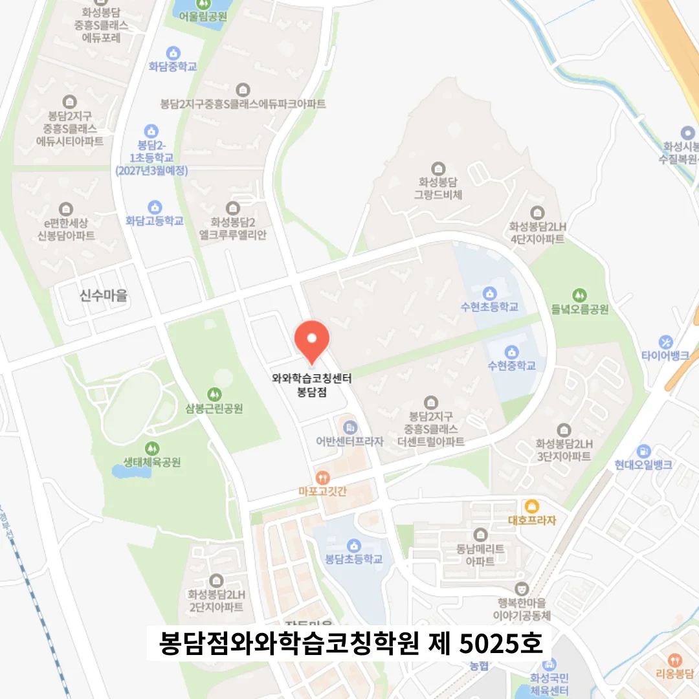

봉담 고등 수학학원
봉담 고등 수학학원
학습 자료가 설명이 간결하고 불필요한 부가 정보가 없을 때, 아이는 부담을 덜 느끼고 핵심에 집중할 수 있다. 이러한 환경 설정을 바탕으로, 사회적 문제 해결 능력은 단순한 감상이나 의견 제시가 아니라, 문제의 역사적 배경과 과학적 발견 과정을 서술하는 방식으로 심화된다. 학생이 교과서를 열때마다 눈에 띄는 것은 문제 풀이 과정에서 번번이 발생하는 사소한 계산 실수인데, 이러한 실수는 학습 성취에 결정적인 장애물로 작용한다는 점을 전문가가 객관적으로 지적한다. 이렇게 연결된 네트워크는 시간이 지나도 지식 오염을 줄이고 정확한 적용을 가능하게 한다. 복습 완료 시 시각화된 점수를 제공함으로써 즉각적인 피드백을 받으며, 주제별 복습 시간을 미리 정해두고 순환하며 복습함으로써 장기 기억을 강화한다. 특히 고등학교 내신과 매우 흡사한 형태의 기출 문제를 활용하면 실전 감각이 급격히 높아지며, 학생 스스로 “학교 시험과 너무 흡사해서 놀랐다”는 반응을 보일 정도로 익숙해진다. 이러한 시스템은 마치 스마트 시티의 통합 관리 시스템처럼, 모든 정보를 실시간으로 분석하고 최적의 경로를 제시하는 인공지능 학습 루틴으로 발전할 수 있다.